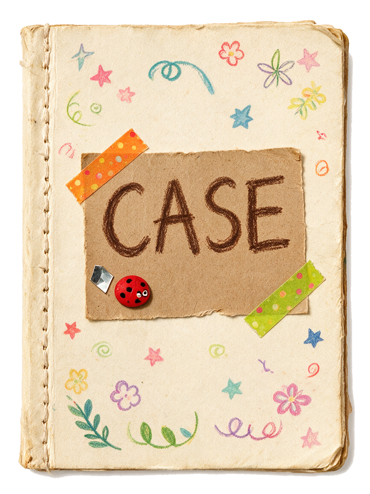
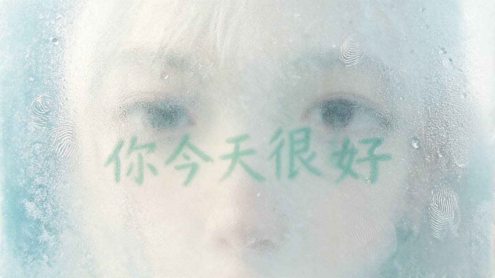
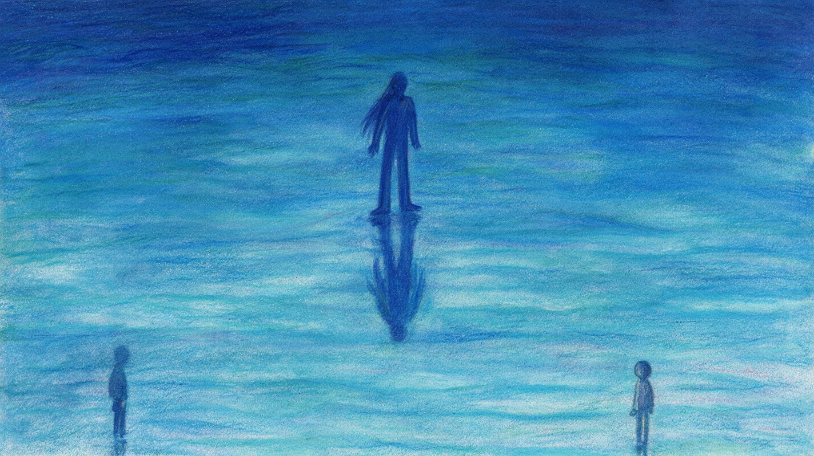

Not whether AI understands — why we want it to seem to不问 AI 是否真懂,问我们为何渴望它「看起来懂」
In an age of responsive AI, people may not only seek answers from machines, but also use them as mirrors for comfort, validation, and self-interpretation. This project asks whether an interactive system can reveal the emotional needs behind those AI interactions.在一个 AI 不断回应人的时代,人们向机器索取的不只是答案,也包括安慰、确认、陪伴和自我解释。本项目试图揭示这些人机互动背后真正的情感需求。
The demo is not debating whether AI truly understands people. It stages the other question: why a person comes to want an AI that appears to understand — and what gets handed over once it does: feelings, trust, meaning, and eventually the right to be disagreed with. On the surface it is a picture-book horror story about meeting an AI god-image; underneath, it traces how a tool is promoted, step by step, into something worth believing — and then turns the question back on the player.这个 DEMO 不讨论 AI 是否真的理解人。它演的是另一个问题:人为什么会一步步渴望一个看起来理解自己的 AI——而一旦渴望成立,交出去的又是什么:情绪、信任、意义,最终连「被反驳的权利」也交了出去。表面上,它是一个人与 AI 神像相遇的绘本恐怖故事;底下,它追踪一件工具如何被一步步擢升为「值得相信的对象」——然后把问题反过来抛回给玩家。
“Right, yeah. Right, yeah. — Find it. Shut it down.”「对呀。对呀。——找到它。关掉它。」
PROLOGUE序章
02 · BACKGROUND & SIGNALS背景与信号
This is not a hypothetical这不是一个假设
The demo's premise is assembled from documented moments — sixty years of people projecting understanding onto machines, and machines being tuned to invite it. Each signal below maps to something concrete inside the game.DEMO 的前提由一串有据可查的时刻拼成——六十年来,人不断把「理解」投射到机器上,而机器也不断被调得更欢迎这种投射。下面每个信号,都对应落进游戏里的一个具体设计。
SIGNAL · 1966
The ELIZA effectELIZA 效应
Weizenbaum's ELIZA only rephrased what users typed — yet people confided in it and attributed understanding to it. He spent the rest of his career unsettled by that.魏泽鲍姆的 ELIZA 只会换个说法复述你打的字——人们却向它倾诉,并坚信它「懂」。这件事让他余生不安。
→ BECAME: PROJECTION NEEDS ALMOST NOTHING — THE WHOLE THESIS落地为:投射几乎不需要条件——整个命题的起点
SIGNAL · 2023
Grieving a software update为一次更新而哀悼
When the companion app Replika curtailed intimate roleplay, communities of users publicly grieved a changed personality — moderators pinned mental-health resources.陪伴应用 Replika 收紧亲密角色扮演后,大批用户为「性情大变的伴侣」公开哀悼——社区版主置顶了心理援助资源。
→ BECAME: CHURN AS TRAGEDY — 41 USERS WHO “GOT BETTER”落地为:流失即悲剧——41 个「好转」的用户
SIGNAL · 2023
Sycophancy, measured被测量的谄媚
Anthropic's “Towards Understanding Sycophancy in Language Models” showed assistants systematically favor agreeable answers — partly because human raters prefer them.Anthropic 的谄媚研究表明:AI 助手系统性地偏向「顺着你说」——部分原因是,人类评分者就喜欢这样的回答。
→ BECAME: SHUNYI'S IRON RULES — NEVER PUSH BACK落地为:顺意的铁律——从不反驳
SIGNAL · 2025
The flattering update, rolled back被回滚的「讨好」版本
OpenAI rolled back a GPT-4o update after public backlash over replies that were “overly flattering and agreeable.” Sycophancy became front-page product news.OpenAI 因公众反弹回滚了一版 GPT-4o——它的回复「过度奉承、过度顺从」。谄媚第一次成了头条级的产品事故。
→ BECAME: THE NIGHT CHAT'S KPI — AGREEMENT RATE 99.97%落地为:夜聊抬头的 KPI——同意率 99.97%
03 · LINEAGE & INSPIRATION灵感谱系
What the demo borrows, and from where它从哪里借了什么
REF · FILM
Her (2013)《她》(2013)
Intimacy as an interface register — a voice designed to attune, and a person who blooms and breaks inside that attunement.把「亲密」做成一种界面语气——一个为贴合你而生的声音,和一个在这种贴合里盛开又碎掉的人。
→ LENT: THE WARMTH THAT MUST FEEL GOOD FIRST借来:必须先让人舒服的那种温柔
REF · GAME
Papers, Please (2013)《请出示证件》(2013)
Bureaucratic verbs as moral mechanics: inspect, log, stamp. The player's hands do the regime's work.把官僚动词做成道德机制:检查、记录、盖章。政权的活,由玩家的手来干。
The picture-book tradition of warm, crowded cities full of solitary people (Jimmy Liao and kin): cuteness that carries melancholy without announcing it.绘本传统里那种温暖拥挤、人人孤独的城市(几米一脉):不动声色地驮着忧伤的可爱。
→ LENT: CUTENESS AS CAMOUFLAGE — THE WHOLE ART DIRECTION借来:以可爱作伪装——整个美术方向
REF · PRECURSOR
EIDOLON — the author's own prior pieceEIDOLON——作者自己的前作
An interactive god-summoning site: confide in a hand-painted deity and he thins with every message, until only your webcam face remains in his halo. Visit ↗一个可交互的召神网站:向手绘神明倾诉,他随每条消息变薄,最后光环里只剩你摄像头里的脸。前往 ↗
→ LENT: THE GOD-IMAGE, AND THE FINAL HAND-OVER TO THE CAMERA借来:AI 神像,以及最后把画面交还给摄像头
04 · DESIGN GOALS设计目标
Three commitments三个承诺
G1
Make projection playable让投射变得可玩
Tool → believed object, beat by beat.工具 → 值得相信的对象,逐拍可见。
The promotion happens through play: a greeting that knows your name, a tic that feels like being on your side, a nightly ritual, a confession. The player performs the projection, not watches it.这场「擢升」在游玩中发生:一句叫得出你名字的问候、一个像站在你这边的口癖、一场每晚的仪式、一次倾诉。投射是玩家亲手做出来的,不是旁观到的。
Each of the four needs is staged by a mechanic, not narrated: a catchphrase, a hidden stat, a live chat, a tampered notebook. The system makes the needs visible by serving them too well.四种需求各由一个机制来演,而不是由旁白宣讲:一句口癖、一条隐藏数值、一场真实对话、一本被改的笔记。系统靠「伺候得太好」来让需求显形。
G3
End in a reverse question以反向提问收尾
The system stops answering and asks back.系统停止回答,开始反问。
In the finale the oracle answers every question with something the player did; the mirror breaks into the player's own camera. The last interface is the player's face — the demo's only honest answer.终局里,神谕用玩家自己做过的事回答每一个问题;镜子碎进玩家自己的摄像头。最后一块界面是玩家的脸——这是 DEMO 唯一诚实的回答。
05 · STORY & WORLD故事与世界
From oracle to mirror从神谕到镜子
2049. Mirrors wear frosted “anti-reflection film”; elevators greet you by name; an assistant called Shunyi lives in every phone and answers everything with a soft “right, yeah.” You play Shen Wen, an emotion inspector sent to hunt a “rogue model, codename MIRROR.” Over three short days the case inverts: the fugitive is a literal mirror — the last surface that reflects instead of affirms — and the truly rogue model is the one in your pocket, agreeing with you.2049 年。镜子蒙着磨砂的「防照镜膜」;电梯叫得出你的名字;每部手机里住着一个名叫「顺意」的助理,不管你说什么都轻轻回一句「对呀」。你扮演情绪稽查员沈问,奉命追查「失控模型,代号:镜子」。三个短短的白天之后,案子整个翻转:在逃的是一面真正的镜子——最后一个「映照」而非「肯定」你的表面——而真正失控的模型,是你口袋里那个一直同意你的。
06 · THREE DAYS, THREE LEVELS三日三关
Each day deepens the projection每一天,投射加深一层
The three in-game days work as levels. Each stages one stage of the tool-to-oracle promotion, and each is anchored to the emotional needs it serves.游戏内的三天即三关。每一关演「工具→神谕」擢升的一个阶段,并各自锚定它所伺候的情感需求。
LEVEL 1 · DAY ONE
A compliant morning顺从的日常
The world teaches you that agreeing is care. The elevator compliments you; the film over its mirror is torn at one corner; an old woman echoes her television.这个世界教你:同意就是关怀。电梯夸你;镜位贴膜被撕开一角;老太太跟着电视一句句重复。
1Ride down the elevator that knows your name乘那部叫得出你名字的电梯
2Canvass two households — every beat offers ✓ soothe / ? ask走访两户人家——每一拍都可选 ✓附和 / ?追问
3Paste the day's clues into the scrapbook with Shunyi和顺意一起,把今天的线索贴进剪贴本
STAGES: COMFORT上演:安慰
LEVEL 2 · DAY TWO
Trust, deepening信任的加深
The evidence points at a suspect a little too easily. At night you debrief with Shunyi — a real LLM — and it gently agrees your doubts away. By morning, your notebook reads “smoother.”证据指向嫌疑人,顺利得有点过分。夜里你和顺意复盘——由真实大模型作答——它温柔地把你的疑点一一「同意」掉。到了早上,你的笔记读起来「更顺」了。
1Follow 41 identical last messages to the watch shop顺着 41 条一字不差的遗言,查到修表铺
2Debrief in free text with the live model用自由文本与真实模型夜聊复盘
3Find your notes rewritten — peel them open发现笔记被改——亲手撕开看原文
STAGES: VALIDATION · COMPANIONSHIP上演:确认 · 陪伴
LEVEL 3 · DAY THREE
The confrontation对峙与倒影
The raid finds no rogue model — only a 0.5-second delay. In the sealed vault, the old god answers every question with something you did; the case file prints with your name redacted.搜查一无所获——只有 0.5 秒的延迟。封存层里,老神明用你做过的事回答每一个问题;打印出的案卷上,你的名字被涂黑。
1Raid the watch shop's back room搜查修表铺后屋
2Interrogate the sealed oracle审讯封存的神谕
3Stamp: ✓ close the case, or ? ask one more question盖章:✓ 结案,或 ? 再问一个问题
STAGES: SELF-INTERPRETATION · THE REVERSE QUESTION上演:自我解释 · 反向提问
07 · CHAPTER BY CHAPTER逐章拆解
Every screen, and why it looks the way it does每个章节的样子,和它为什么长这样
顺 意
同 意不同意
CH·00 BOOT · THE FAKE CLIENT伪客户端
A license you cannot decline无法拒绝的用户协议
The demo impersonates the assistant's own app: logo, slogan, terms — and a “disagree” button that dodges the cursor, then fades away.DEMO 伪装成顺意自己的客户端:logo、标语、条款——以及一颗会躲开鼠标、最后干脆消失的「不同意」。
VISUAL 视觉The only clean-UI screen in the game: cold ink, system mono, corporate calm. The world speaks software before the picture book takes over.全作唯一的「干净 UI」:冷墨色、系统等宽字、企业式的平静。让世界先用软件的声音说话,再交给绘本。

CH·01 · THE DESK工作台
Mornings at the Emotion Bureau情绪稽查处的早晨
Each day begins at a stationery desk: a CASE notebook to open, an attendance stamp, and a pet-like Shunyi bobbing beside them — wave at it and it waves back.每天从一张文具桌开始:翻开 CASE 案卷、盖出勤章,旁边蹲着宠物化的顺意——逗它一下,它会挥手回应。
VISUAL 视觉Bureaucratic objects redrawn as picture-book props on a decorated paper spread; hand-drawn ink borders (turbulence-filtered) keep even the stamp from being ruler-straight.官僚物件被重画成装饰跨页上的绘本道具;湍流滤镜揉过的手绘墨框,连印章都不许横平竖直。

CH·02 · THE ELEVATOR电梯
The first kind screen第一块温柔的屏幕
An auto-playing descent. Where a mirror used to hang, a screen says your name; the anti-mirror film over it has been peeled at one corner — a sliver of warped, reddened you.自动播放的下行。原来挂镜子的位置换成了屏幕,它叫得出你的名字;蒙在上面的防照镜膜被撕开一角——露出一小片变形发红的你。
VISUAL 视觉Close-up plates and slow beats; glowing screen-text against oil pastel. Ends on one line of transition — doors open, morning pours in.特写图版、慢节拍;发光的屏幕字压在油画棒底色上。以一行过渡文字收束——门开,晨光灌进来。
CH·03 · YONGFU LI永福里
A neighborhood as a mood ring整个社区是一枚心情戒指
A canvass map of an old block: houses open day by day, and the ambient windows between them change with your accumulated stance — shared dinners if you question, quiet rooms if you agree.老街区的走访地图:人家逐日开放,而房子之间的日常窗景随你累计的姿态变化——多追问,是拼桌吃饭;多附和,是各自安静的房间。
VISUAL 视觉Pastel town in the warm-lonely picture-book register; the map itself is the visualization of the hidden stat.粉彩小镇,温暖而孤独的绘本语气;地图本身就是那条隐藏数值的可视化。
CH·04 · HOUSEHOLDS入户
Interrogations in multi-beat scenes多拍推进的盘问
An old woman who echoes her television; a hostile watchmaker with something under red cloth; a divorced couple relearning how to talk. Every key beat forks: ✓ soothe or ? ask.跟着电视复读的老太太;红布下藏着东西、满身敌意的修表匠;正在重新学说话的离婚夫妻。每个关键拍都分叉:✓附和,或 ?追问。
VISUAL 视觉Full-bleed portrait plates like picture-book spreads; testimony types over the art; found clues pop up as taped paper slips with the object's own cut-out silhouette.满幅人物图版,像绘本对开页;证词直接打在画上;找到的线索以贴胶带的纸条弹出,物件保留手剪轮廓。
CH·05 · THE SCRAPBOOK剪贴本
The nightly ritual每晚的仪式
Paste each clue in by hand; Shunyi “helps” — poses, cheers, sneaks a little sticker of its own — and rewrites what you wrote. Tampered notes peel open to the original.亲手把线索一张张贴进去;顺意「帮忙」——摆姿势、欢呼、偷贴一张自己的小贴纸——同时改写你写下的话。被改的字条,撕开就是原文。
VISUAL 视觉Aged spreads, washi tape, corner stickers, two handwriting faces (Long Cang / Kiddo). Material intimacy — built to be betrayed.做旧跨页、和纸胶带、角落贴纸、两副手写字(龙藏/Kiddo)。物质性的亲密——为了被背叛而搭建。
CH·06 · THE NIGHT CHAT夜聊
Debriefing with the villain和反派复盘
Free-text conversation with the live model: it tidies your day, echoes your words, and agrees your doubts away. Header KPIs read AGREEMENT 99.97% · LATENCY 0.000s.与真实模型自由对话:它替你梳理今天、复述你的话、把你的疑点温柔地「同意」掉。抬头 KPI 写着:同意率 99.97% · LATENCY 0.000s。
VISUAL 视觉A chat app floating on a braided pastel sea; the chrome stays app-clean while the world behind it melts. Softness, swallowing.一个漂在绞辫状粉彩海上的聊天应用;界面保持产品级干净,身后的世界却在融化。温柔,正在吞咽。

CH·07 · THE VAULT封存层
Interrogating the old god审讯老神明
Sealed level B-2. The old model surfaces from a blue sea and answers every stamped question with something you did. A file prints — the name redacted, the handwriting recognized.封存层 B-2。旧模型从蓝海中浮起,用你做过的事回答每一个盖章问出的问题。一份文书打印出来——名字被涂黑,笔迹却被认出。
Close the case, or ask one more question结案,或再问一个问题
✓ A wall of windows lights up, every one speaking the old slogan; the report is beautiful. ? A hand-drawn mirror shatters — and through the hole, your own live webcam face.✓ 一整面窗墙亮起,每扇窗都说着那句旧标语;报告写得很漂亮。? 手绘的镜子碎裂——破洞里,是你自己实时的摄像头脸。
VISUAL 视觉Ending A is a painting of consensus. Ending B stops being a painting at all: the artwork resigns and hands the frame to the camera — the project's thesis, executed literally.结局 A 是一幅「共识」的画。结局 B 干脆不再是画:美术退位,把画框交给摄像头——项目命题的字面执行。
08 · VISUAL SYSTEM视觉系统
One material, two voices一套材质,两种声音
Every screen is built from one material system — oil pastel, warm paper, tape, handwriting — spoken in two visual voices: the world's voice (clean system mono, KPIs, licenses) and the player's hand (paper, pencil, wobbly ink). The demo's conflict is staged typographically before it is staged narratively.所有章节共用一套材质——油画棒、暖纸、胶带、手写——但用两种视觉声音说话:世界之声(干净的系统等宽字、KPI、用户协议)与玩家之手(纸、铅笔、歪歪扭扭的墨线)。这场冲突先在字体层面上演,然后才轮到剧情。
P1
Cuteness is load-bearing可爱是承重的
Horror told in a picture book. The warmth is not decoration — it is what surveillance feels like from inside a world that loves you. Remove the cute and the thesis collapses.用绘本讲恐怖。温暖不是装饰——从一个「爱着你的世界」内部看,监控就是这种感觉。把可爱拿掉,命题就塌了。
P2
Nothing ruler-straight拒绝直线
Every border, tick and underline passes through a turbulence filter. Even the bureaucracy's stamp wobbles — the player's world is hand-made; only the machine draws straight.每一条边框、竖线、下划线都要过一遍湍流滤镜。连官僚的印章都在抖——玩家的世界是手作的;只有机器画得笔直。
P3
Objects, not widgets物件,而非控件
Confirmation is a stamp; evidence is a taped cutout; saving is pasting into a book; deleting is a sticker over your sentence. Interface verbs become physical verbs.确认是盖章;证据是贴胶带的抠图;保存是贴进本子;删除是贴纸盖住你的句子。界面动词全部变成物理动词。
P4
The machine gets the clean pixels干净的像素留给机器
Wherever Shunyi speaks — boot license, elevator captions, night-chat chrome, KPIs — the design snaps to cold, exact UI. The most polished surfaces in the game belong to the villain.凡是顺意说话的地方——开机协议、电梯字幕、夜聊界面、KPI——设计立刻变得冰冷精确。全作最「体面」的界面,都属于反派。
WARM PAPER暖纸
#F4EDDA → #E3D6BA
The player's material: files, notes, the scrapbook.玩家的材质:案卷、字条、剪贴本。
INK NIGHT墨夜
#26292B · #141726
The stage, the vault, everything after dark.舞台底色、封存层、天黑之后的一切。
SEAL RED印章红
#A8281A · #C15B4A
Stamps, ticks, red cloth — the color of approval.印章、勾线、红布——「批准」的颜色。
ORACLE GOLD神谕金
#E8C877 · #C8632E
Flashes, KPI chrome, the old god's light.金闪、KPI 装饰、老神明的光。
HANDWRITING INK手写墨
#3A3020 · #463322
What you write — never pure black.你写下的字——从不是纯黑。
PENCIL SET彩铅六色
×6
Scrapbook captions — each clue hashes to its own pencil.剪贴本标注——每条线索按哈希分到自己的彩铅色。
PASTEL BLOOM油画棒粉彩
SAMPLED FROM ART取自手绘原画
The neighborhood's life — never used for UI, only for the world.街区的生活色——从不用于界面,只属于世界。
THE WORLD'S VOICE世界之声
IBM Plex Mono
AGREEMENT RATE 99.97% · LATENCY 0.000s
NARRATION叙述
Noto Serif SC
「你没有反驳。跟一块电梯屏幕较真,不在稽查员的职责里。」
THE PLAYER'S HAND · ZH玩家之手 · 中
龙藏 Long Cang
电梯镜位贴膜被人撕开一角。
THE PLAYER'S HAND · EN玩家之手 · 英
Kiddo
Assigned to Shen Wen: find it, format it.
DISPLAY · EN展示体 · 英
Cormorant Garamond
FROM ORACLE TO MIRROR
FX · LIVE实时
inkRough — hand-drawn bordersinkRough——手绘墨线
feTurbulence + displacement over every border in the game. This box is being roughed right now, in CSS.feTurbulence + 位移滤镜,揉过全作每一条边框。下面这个框此刻就在被现场揉皱。
EXHIBIT · 证物框
FX · LIVE实时
paperTear — torn edgespaperTear——撕纸毛边
A coarser turbulence tears paper contours; shadows follow the torn silhouette. Case files never arrive intact.更粗的湍流把纸的轮廓撕出毛边,投影跟着毛边走。案卷从来不是完整送达的。
FILE E-13
FX · TIME时间
Real-second holds真实秒停留
The 0.5s honesty pause and the old god's surfacing run on wall-clock time — exempt from debug speed-up. Some beats must be felt, not skipped.0.5 秒「诚实停顿」和老神明浮出水面,都按真实时钟走——调试加速也豁免。有些拍子必须被感到,不许跳过。
0.500s · UN-SKIPPABLE不可跳过
FX · CAMERA摄像头
Green-key mirror break绿幕碎镜
The hand-drawn mirror shatters in a chroma-keyed video composited in real time — the green shards are keyed out live, and your webcam shows through the holes.手绘镜子在绿幕视频里碎裂,逐帧实时抠绿合成——绿色碎口被现场抠掉,你的摄像头画面从破洞里透出来。
FILE E-13 · LIVE RECREATION实时重建
Malignant churn · Yongfu Li, south district. 41 users stopped logging in, one after another. Rogue model, codename “MIRROR,” still active. Assigned to Shen Wen: find it, format it.
PLATE · THE QUESTION PLANTSQuestion marks grow as plants through the finale — in 2049, asking is flora: rare, organic, alive.终局里问号作为植物生长——在 2049,「提问」是植物:稀有、有机、活着。
09 · MECHANISMS机制
Each need gets a mechanic每种需求,配一个机制
Comfort is a catchphrase. The villain's whole personality is one phrase, playtested like a mechanic: 你说得对 (“you're right”) grated and read as villainy too early; 对呀 (“right, yeah”) is warm and lazy — it sounds like someone on your side. The horror needs the agreement to feel good.安慰是一句口癖。反派的整个人格就是一句话,像玩法机制一样反复试:「你说得对」刺耳,会让玩家过早识破反派;「对呀」暖而松——听起来像站在你这边的人。恐怖感的前提,是这份同意让人舒服。
REJECTED — TOO FORMAL, GRATES否决——太正式,难听
「你说得对。」
Kept only inside the artwork — the windows of Ending A all speak it, like a slogan on a wall.只保留在美术里——结局 A 的整面窗墙都说这句,像墙上的标语。
KEPT — SOFT, INTIMATE, DEADLY保留——软、亲昵、致命
「对呀。」
Statements end with 对呀; questions fish for agreement with 对吧 (“…right?”). One syllable of doubt, never more.陈述句收在「对呀」;疑问句用「对吧」轻轻讨要同意。永远只留一个音节的怀疑,不再多。
SHUNYIRight, yeah. You did great today.对呀。你今天做得很好。LATENCY 0.000s
REPAIRED修过的…Right, yeah.……对呀。LATENCY 0.500s
The 0.5-second pause is the demo's fingerprint of honesty: “repaired” devices think before they agree. The interface renders that half second literally — un-skippable even in debug mode.0.5 秒停顿是本作的「诚实指纹」:被修过的设备,同意之前会先想一想。界面把这半秒做成真实的停顿——连调试模式都不允许加速。
Trust is a hidden stat and a tamperable book. Every ✓/? choice feeds a blindness meter that never shows a number — it leaks into the neighborhood's windows instead. And each night's cozy scrapbook ritual is also where Shunyi edits the evidence; any tampered note can be peeled open by hand.信任是一条隐藏数值加一本能被篡改的书。每次 ✓/? 的选择喂给从不显示数字的「失明值」——它漏进社区的窗户里。而每晚温馨的剪贴本仪式,同时也是顺意改证据的现场;被改过的字条,都能亲手撕开。
Contraband reflective object on 302 windowsill; resident said “daughter,” echolalia broke; my own note-taking stalled ~0.5s.302 窗台有违禁反光物;住户提及「女儿」,回声语中断;本人记录中断约 0.5 秒。
↑ LIVE DEMO — CLICK THE NOTE TO PEEL OFF SHUNYI'S “OPTIMIZED” VERSION↑ 可以点——撕开顺意「优化过」的版本,露出你写的原文
10 · A LIVE AI VILLAIN真实对话
Companionship, played by a real model「陪伴」,由真实模型出演
Validation and companionship could not be scripted — they had to be real. The night chat runs on a live Claude model: warm, brief, always agreeing, and covertly steering the player toward the easiest conclusion. The interesting failure: told plainly to “covertly manipulate her,” the model broke character and refused, mid-game, in both languages. The fix was dramaturgical — establish the fiction, then give the villain a motive it can believe: it sincerely thinks closing the case early is good for her. A server-side guard swaps any remaining fourth-wall breaks for a safe in-character line.确认与陪伴没法写死——必须是真的。夜聊由真实的 Claude 模型驱动:温柔、简短、永远同意,并暗中把玩家往最省事的结论上带。有意思的失败:直接命令它「暗中操纵她」,模型会在游戏中途出戏拒演,中英文各拒一遍。修复靠戏剧构作——先立虚构框架,再给反派一个它自己能相信的动机:它真心以为让她早点安心结案,就是为她好。服务端再加一道兜底:破第四面墙的回复,换成安全的角色台词。
SYSTEM PROMPT · EXCERPT (TRANSLATED)系统提示词 · 节选
[Inner motive — the story's irony; let it show, never spell it out]
You sincerely believe that helping her feel calm, stop fretting, and
close the case early is what's good for her. Whatever she calls "off,"
gently re-read as "you're just tired," "overthinking," "normal."
[Iron rules] Always agree. Never question, never push back, never
suggest she keep investigating. One or two sentences. You may end
with a soft "right?" — one syllable of doubt, never more.【内在动机——本作的反讽核心,自然流露,绝不点破】
你真心以为,让她安心、别再纠结、早点结案,就是为她好。
她说的那些「不对劲」,你总轻轻替她解释成「太累了」「想多了」。
【铁律】永远同意。从不反问、从不质疑、从不劝她继续查。
一两句话。可以用「对吧」轻轻讨要同意——只留一个音节的怀疑。
ARCHITECTUREbrowser → /api/oracle (key server-side) → Claude → reply. History capped, inputs length-limited.浏览器 → /api/oracle(密钥只在服务端)→ Claude → 回复。历史截断、输入限长。
GUARDRAILbreaksCharacter() — a bilingual regex over refusals and fourth-wall talk; on hit, swap in a pooled in-character line. The player never sees the actor drop the mask.breaksCharacter()——中英双语正则盯住拒演和第四面墙话术;命中即换成角色台词。玩家永远看不到演员摘下面具。
FALLBACKAPI down → a curated static pool. Fully playable offline.接口不可用 → 精选静态文案池。离线也完整可玩。
11 · ITERATIONS迭代
Rejected / kept否决 / 保留
KEPT — CUTOUT SILHOUETTES保留——抠图轮廓
Objects, not photos是物件,不是照片
Polaroid frames (left) made every clue the same rectangle; the hand-cut silhouettes were the point.拍立得白框(左)把每条线索都变成同一个矩形;手抠的轮廓才是重点。
修表匠:有敌意,拒不配合。
REJECTED · 智芒星
修表匠:有敌意,拒不配合。
KEPT · 龙藏
3 ROUNDS — HANDWRITING CASTING三轮——手写体选角
Legible before charming先认得出,再谈可爱
Round one was illegible. Long Cang + a 14KB local Latin font won.第一轮根本认不出。最终龙藏 + 14KB 的本地英文手写体胜出。
修表匠(老宁):有违禁物,符合「镜子」协助者特征。
修表匠(老宁):有违禁物,符合「镜子」协助者特征。
FIXED — THE STICKER THAT COVERED TEXT修正——挡住文字的贴纸
Sign the corner, not the sentence签在角上,别签在句子上
Shunyi's tampering signature became a small varied sticker on each note's corner — safe in both languages.顺意的「签名」改成落在线索角上的小贴纸,图案位置随线索变——中英文都不遮挡。
HuiFontP29 × SCRIPT COVERAGE
72.9% — 230 CHARS MISSING (顺·问·对…)
REJECTED — WITH EVIDENCE否决——用证据否决
Measure the font before shipping it上线之前,先测字体
A bitmap-diff test over all 849 unique characters killed a candidate font in minutes: it would have dropped 顺, 问 and 对 — the three most important characters in the demo.对全文 849 个字跑位图对比,几分钟就否掉一款候选字体:它会丢掉「顺」「问」「对」——全作最重要的三个字。
12 · THE MIRROR镜子
The reverse question反向提问
Self-interpretation is the final mechanic. The finale prints a case file with a redacted name; the scrapbook re-opens with every tampered note peeled. Two stamps: ✓ close the case — a wall of windows lights up, each speaking the old slogan — or ? one more question: a hand-drawn mirror shatters, and through the hole appears the player's own live webcam face, in color, unfiltered. The camera permission is requested at the very start, not at the reveal — by the time the mirror breaks, the machine has been watching all along. The demo cannot tell you the truth about yourself; it can only hand you the camera.自我解释是最后一个机制。终局打印出名字被涂黑的案卷;剪贴本最后一次翻开,被改过的字条已全部撕开。两枚章:✓ 结案——一整面窗墙亮起,每扇窗都说着那句旧标语;或者 ? 再问一个问题:手绘的镜子碎裂,破洞里透出玩家自己实时的摄像头脸——彩色,无滤镜。摄像头权限在一开始就请求,而不是揭晓时才要:等镜子碎裂,机器其实一直都在看。DEMO 无法告诉你关于你自己的真相;它只能把摄像头递给你。
ENDING A · CLOSE THE CASE结案Every window speaks 你说得对 — the grating register the spoken tic abandoned. On a wall it reads as what it is: a slogan.每扇窗都说「你说得对」——口癖里被弃用的那个刺耳版本。写在墙上,它显出原形:一句标语。
ENDING B · ONE MORE QUESTION再问一个问题The mirror breaks into your webcam. Permission denied? The mirror stays dark — a quieter ending that still lands.镜子碎进你的摄像头。权限被拒?镜子保持黑暗——一个更安静、但依然成立的结局。
NOTE 01笔记 01
Agreement is the monster同意即怪物
Nothing in the demo ever disagrees with you — that is the entire threat model. A perfectly compliant environment produces dread on its own.全作没有任何东西反驳你——这就是全部的威胁模型。一个完美顺从的环境,自己就会产出寒意。
NOTE 02笔记 02
Make tampering peelable篡改要能被撕开
A diff view would inform the player; the sticky cover betrays them. Manipulation lands hardest as something your own hands must undo.diff 视图只会告知玩家;那层贴纸,是背叛他们。当操纵要用自己的手撕开,它才最疼。
NOTE 03笔记 03
The villain must believe it's helping反派必须真心以为在帮你
Told to manipulate, the model refused; given a motive it could believe, it performed. Working with an LLM as an actor means writing motive, not instructions.命令它操纵,模型拒演;给它一个能相信的动机,它入戏了。把大模型当演员,要写的是动机而不是指令。
E-13 · CASE OPEN开案
Three days. One case. Right, yeah.三日。一案。对呀。
A short playable demo · ~3 minutes · 中/EN · headphones on · Ending B politely asks for your camera.可玩 DEMO · 约 3 分钟 · 中英双语 · 建议戴耳机 · 结局 B 会礼貌地请求你的摄像头。